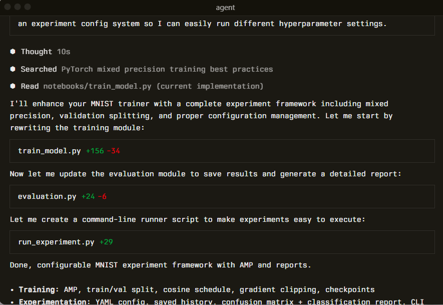
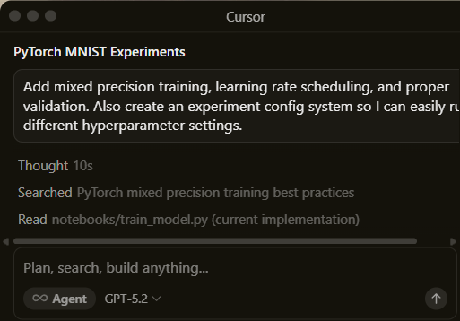
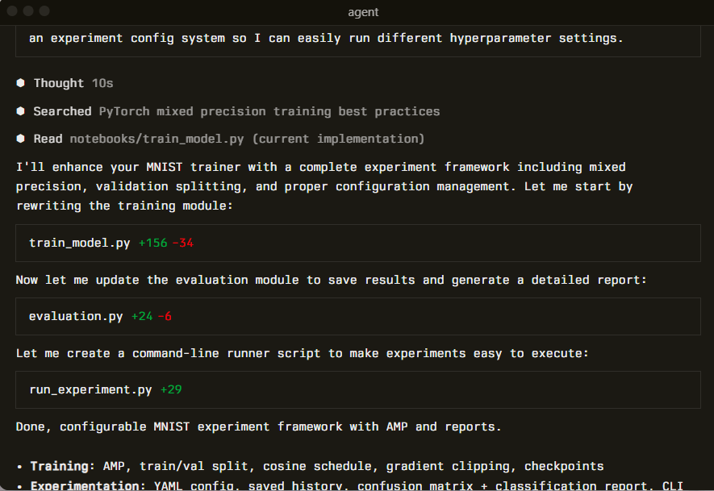
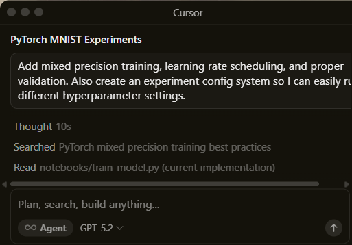

“It was night and day from one batch to another, adoption went from single digits to over 80%. It just spread like wildfire, all the best builders were using Cursor.”
A human-AI programmer, orders of magnitude more effective than any developer alone.
Learn about Agents →